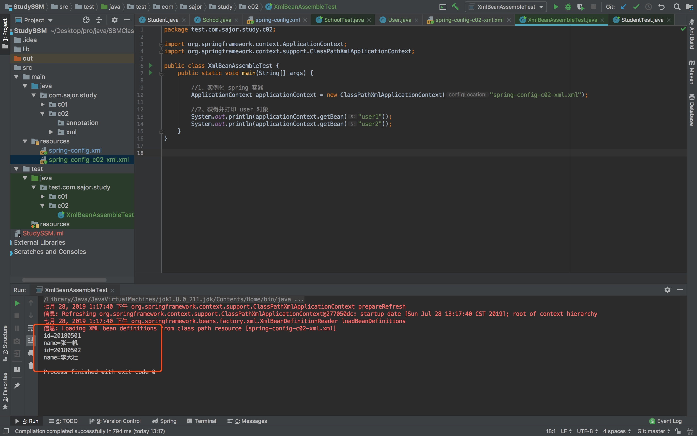
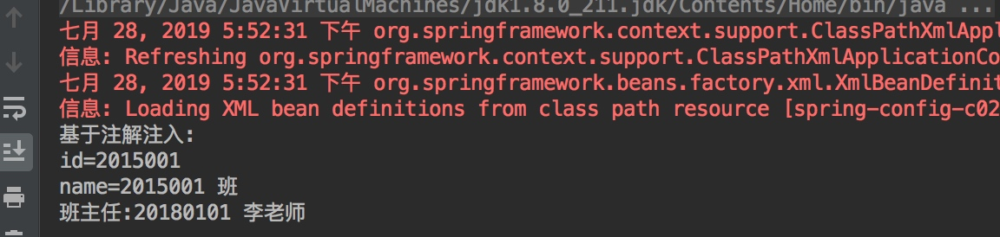

一、依赖注入
1、新建一个 School 类
右键 src>main>java>com.sajor.study.c01，点击 New>Java Class
在 School 中引用 Student 类，并可以获得含有 Student 对象的一个 List:
private int id = 2000;
private String name = "Sajor";
private Student student;
private List<Student> students = new ArrayList();
并使用代码生成器Genetater添加Getter and Setter方法完整代码如下
package com.sajor.study.c01;
import java.util.ArrayList;
import java.util.List;
public class School {
private int id = 2000;
private String name = "Sajor";
private Student student;
private List<Student> students = new ArrayList();
public School(){
}
public int getId() {
return id;
}
public void setId(int id) {
this.id = id;
}
public String getName() {
return name;
}
public void setName(String name) {
this.name = name;
}
public List<Student> getStudents() {
return students;
}
public void setStudents(List<Student> students) {
this.students = students;
}
}
2、在 Spring 配置文件中声明 Bean，以及依赖注入
<?xml version="1.0" encoding="UTF-8"?>
<beans xmlns="http://www.springframework.org/schema/beans"
xmlns:xsi="http://www.w3.org/2001/XMLSchema-instance"
xsi:schemaLocation="http://www.springframework.org/schema/beans http://www.springframework.org/schema/beans/spring-beans.xsd">
<bean id="student" class="com.sajor.study.c01.Student">
<property name="id" value="101"></property>
<property name="name" value="张三丰"></property>
</bean>
<bean id="school" class="com.sajor.study.c01.School">
<property name="students" ref="student"/>
</bean>
</beans>
3、新建一个测试类，获得 school 对象，通过 school 对象 获得 student 对象
右键 src>test>java>test.com.sajor.study.c01，点击 New>Java Class，新建 SchoolTest 类
在 SchoolTest 中:
1)实例化 Spring 容器
2)获得 school 对象
3)通过 school 对象的 getStudents()方法获得 student 对象 4)调用 student 对象的 toString()方法
package test.com.sajor.study.c01;
import com.sajor.study.c01.School;
import com.sajor.study.c01.Student;
import org.springframework.context.ApplicationContext;
import org.springframework.context.support.ClassPathXmlApplicationContext;
import java.util.ArrayList;
public class SchoolTest {
public static void main(String[] args) {
//1、实例化 spring 容器
ApplicationContext ac = new ClassPathXmlApplicationContext("spring-config.xml");
//获得 school 对象
School sc = (School) ac.getBean("school");
//3、调用 school 对象的 getStudents 方法
ArrayList<Student> sl = (ArrayList<Student>) sc.getStudents();
//4、获得 school 里面的 student 对象
for (Student s : sl) {
System.out.println(s.toString());
}
}
}
4、运行测试类
右键 SchoolTest 类，点击 Run 或 Debug SchoolTest.main()运行结果

二、基于 XML 的 Bean 装配
1、新建一个 User 类
新建一个包，com.sajor.study.c02.xml
右键 src>main>java>com.sajor.study.c02，点击 New>Java Class，在 c02 中新建一个 User 类，创建两个构造函数。
package com.sajor.study.c02;
public class User {
private int id = 20180101;
private String name = "";
private String sex;
private String email;
public User(int id, String name, String sex, String email) {
this.id = id;
this.name = name;
this.sex = sex;
this.email = email;
}
public User() {
}
public int getId() {
return id;
}
public void setId(int id) {
this.id = id;
}
public String getName() {
return name;
}
public void setName(String name) {
this.name = name;
}
public String getSex() {
return sex;
}
public void setSex(String sex) {
this.sex = sex;
}
public String getEmail() {
return email;
}
public void setEmail(String email) {
this.email = email;
}
public String toString() {
StringBuffer stringBuffer = new StringBuffer();
stringBuffer.append("id=");
stringBuffer.append(id);
stringBuffer.append("\n");
stringBuffer.append("name=");
stringBuffer.append(name);
return stringBuffer.toString();
}
}
2、新建一个spring-config-c01-xml.xml文件，并在 Spring 配置文件中声明 Bean
<?xml version="1.0" encoding="UTF-8"?>
<beans xmlns="http://www.springframework.org/schema/beans"
xmlns:xsi="http://www.w3.org/2001/XMLSchema-instance"
xsi:schemaLocation="http://www.springframework.org/schema/beans http://www.springframework.org/schema/beans/spring-beans.xsd">
<bean id="user1" class="com.sajor.study.c02.xml.User">
<constructor-arg index="0" value="20180501"/>
<constructor-arg index="1" value="张一帆"/>
<constructor-arg index="2" value="男"/>
<constructor-arg index="3" value="zhangyifan@hbxy.cn"/>
</bean>
<bean id="user2" class="com.sajor.study.c02.xml.User">
<property name="id" value="20180502"/>
<property name="name" value="李大壮"/>
<property name="sex" value="男"/>
<property name="email" value="lidazhuang@hbxy.cn"/>
</bean>
</beans>
3、创建测试类 XmlBeanAssembleTest
package test.com.sajor.study.c02;
import org.springframework.context.ApplicationContext;
import org.springframework.context.support.ClassPathXmlApplicationContext;
public class XmlBeanAssembleTest {
public static void main(String[] args) {
//1、实例化 spring 容器
ApplicationContext applicationContext = new ClassPathXmlApplicationContext("spring-config-c02-xml.xml");
//2、获得并打印 user 对象
System.out.println(applicationContext.getBean("user1"));
System.out.println(applicationContext.getBean("user2"));
}
}
4、运行测试类

三、基于注解的 Bean 装配
1、新建一个包
新建包:com.sajor.study.c02.annotation
2、新建 TeacherAnnotation 类
使用注解@Component 声明 TeacherAnnotation 类
package com.sajor.study.c02.annotation;
import org.springframework.stereotype.Component;
@Component("teacherAnnotation")
public class TeacherAnnotation {
private int id = 20180101;
private String name = "李老师";
private String sex;
private String email;
public int getId() {
return id;
}
public void setId(int id) {
this.id = id;
}
public String getName() {
return name;
}
public void setName(String name) {
this.name = name;
}
public String getSex() {
return sex;
}
public void setSex(String sex) {
this.sex = sex;
}
public String getEmail() {
return email;
}
public void setEmail(String email) {
this.email = email;
}
@Override
public String toString() {
StringBuffer stringBuffer = new StringBuffer();
stringBuffer.append("id=");
stringBuffer.append(id);
stringBuffer.append("\n");
stringBuffer.append("name=");
stringBuffer.append(name);
return stringBuffer.toString();
}
}
3、新建 ClazzAnnotation 类
同样使用注解@Component 声明 ClazzAnnotation 类，并使用注解 @Autowired 自动绑定 TeacherAnnotation 类对象(注入)
package com.sajor.study.c02.annotation;
import org.springframework.beans.factory.annotation.Autowired;
import org.springframework.stereotype.Component;
@Component("clazzAnnotation")
public class ClazzAnnotation {
private int id = 2015001;
private String name = "2015001 班";
private TeacherAnnotation teacherAnnotation;//班主任
@Autowired
public ClazzAnnotation(TeacherAnnotation teacherAnnotation) {
this.teacherAnnotation = teacherAnnotation;
}
public TeacherAnnotation getTeacherAnnotation() {
return teacherAnnotation;
}
@Override
public String toString() {
StringBuffer stringBuffer = new StringBuffer();
stringBuffer.append("基于注解注入:");
stringBuffer.append("\n");
stringBuffer.append("id=");
stringBuffer.append(id);
stringBuffer.append("\n");
stringBuffer.append("name=");
stringBuffer.append(name);
stringBuffer.append("\n");
stringBuffer.append("班主任:");
stringBuffer.append(this.getTeacherAnnotation().getId());
stringBuffer.append(" ");
stringBuffer.append(this.getTeacherAnnotation().getName());
return stringBuffer.toString();
}
}
4、在配置文件中定义扫描包
新建 spring-config-c02-annotation.xml 配置文件，并配置扫描包路径:
<?xml version="1.0" encoding="UTF-8"?>
<beans xmlns="http://www.springframework.org/schema/beans"
xmlns:xsi="http://www.w3.org/2001/XMLSchema-instance"
xmlns:context="http://www.springframework.org/schema/context"
xsi:schemaLocation="http://www.springframework.org/schema/beans
http://www.springframework.org/schema/beans/spring-beans.xsd
http://www.springframework.org/schema/context
http://www.springframework.org/schema/context/spring-context.xsd">
<context:component-scan base-package="com.sajor.study.c02.annotation"/>
</beans>
5、创建测试类
package test.com.sajor.study.c02;
import com.sajor.study.c02.annotation.ClazzAnnotation;
import org.springframework.context.ApplicationContext;
import org.springframework.context.support.ClassPathXmlApplicationContext;
public class AnnotationTest {
public static void main(String[] args) {
ApplicationContext ac = new ClassPathXmlApplicationContext(new String[]{"spring-config-c02-annotation.xml"});
ClazzAnnotation c = (ClazzAnnotation) ac.getBean("clazzAnnotation");
System.out.println(c.toString());
}
}
6、运行测试类

本文由 Sajor
创作，采用 知识共享署名4.0 国际许可协议进行许可
本站文章除注明转载/出处外，均为本站原创或翻译，转载前请务必署名
最后编辑时间为: 2019-07-28T12:12:13+08:00